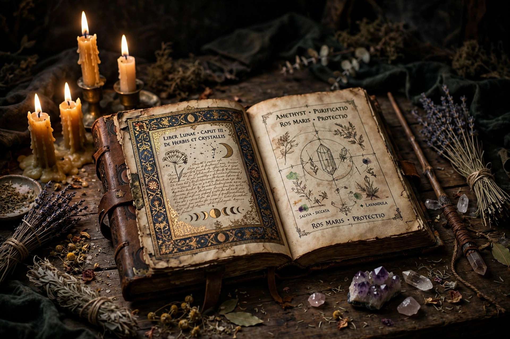

From Wikipedia, the free encyclopedia
| Magic | |
|---|---|
 | |
| Etymology | From Greek mageia, the practices of the Magi |
| Common forms | Divination, spells, ritual, alchemy, astrology, witchcraft |
| Key concepts | Sympathetic magic, mana, ritual, grimoires |
| Studied by | Anthropology, history of religion, occult studies |
Magic, sometimes spelled magick, is the application of beliefs, rituals or actions employed in the belief that they can manipulate natural or supernatural beings and forces. It is a category into which have been placed various beliefs and practices sometimes considered separate from both religion and science. The term derives from the Greek mageia, originally denoting the rites of the Magi, the priestly caste of ancient Persia.
Magical practice is attested from the earliest written records: Mesopotamian incantation tablets, Egyptian funerary texts and execration rituals, and the oracles and curse tablets (defixiones) of the Greek and Roman worlds. Greco-Egyptian magical papyri preserve elaborate spells combining Egyptian, Greek, Jewish, and other elements. In the medieval Islamic world and Christian Europe, learned magic flourished in forms such as astrology, alchemy, and the grimoire tradition of Solomonic magic, while popular magic — charms, healing, divination, protection against witchcraft — permeated village life. The Renaissance saw a revival of Neoplatonic and Hermetic magic in figures such as Marsilio Ficino, Cornelius Agrippa, and John Dee, alongside the witch trials that peaked between roughly 1560 and 1630.
Modern study begins with James George Frazer's The Golden Bough (1890), which framed magic as a pseudo-science based on the laws of similarity and contagion ("sympathetic magic"), and with Bronisław Malinowski's fieldwork showing magic's practical role in managing uncertainty and anxiety in Trobriand life. Émile Durkheim distinguished magic from religion by its individual, client-based character. Later scholars have criticised rigid magic/religion/science boundaries, while the 19th- and 20th-century ceremonial magic revival — the Hermetic Order of the Golden Dawn, Thelema, and modern pagan witchcraft (Wicca) — turned historical magical traditions into living religious practice.
Witchcraft · Alchemy · Divination · Grimoire · Sympathetic magic · Occult